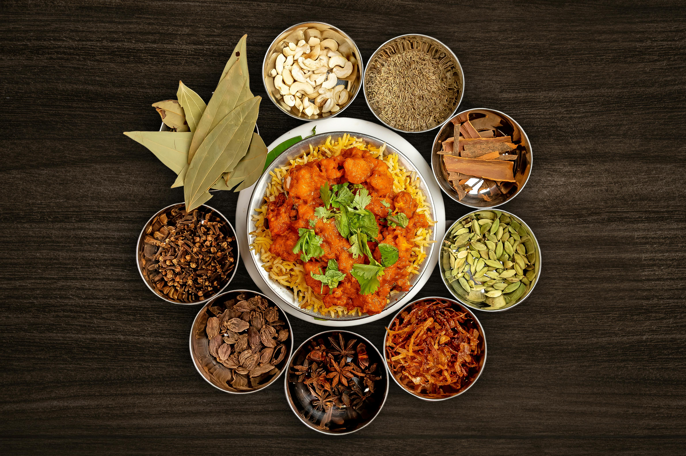

Vegetable Curry

Description
Curry is a highly-spiced, fragrant dish common to many cultures.
This recipe is inspired by Indian curries such as korma.
- Vegetable stock
- Coconut milk
- Tomato paste
- Potatoes
- Curry paste
- Garlic
- Mixed vegetables
- Ginger
- Mince garlic and ginger and saute over medium heat until fragrant
- Add curry paste and potatoes and cook until potatoes are softened
- Add tomato paste, coconut milk, and vegetable sauce. Bring to boil.
Reduce heat and allow to simmer until potatoes are soft.
- Add vegetables and cook until they are at desired texture.
- Enjoy!